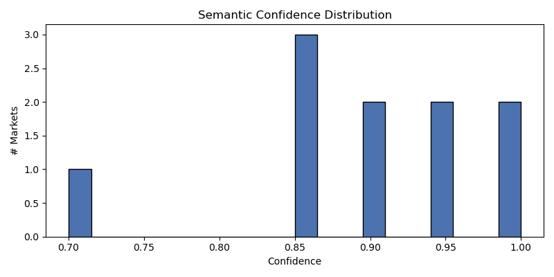
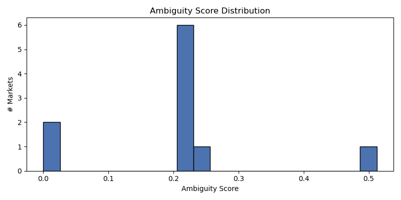
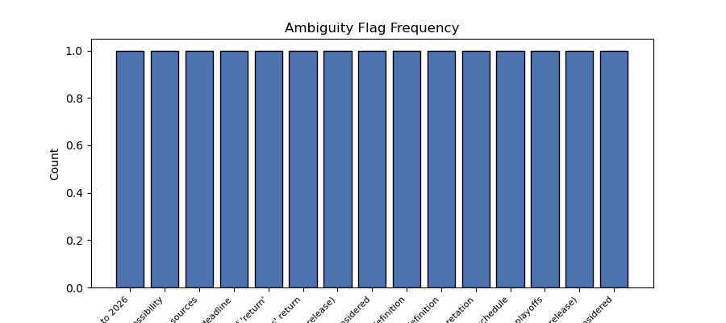

Generated: 2026-05-11T15:39:55Z



| market_id | question | confidence | ambiguity | market_type | flags | needs_review | model | prompt_version |
|---|---|---|---|---|---|---|---|---|
| 540881 | GTA VI released before June 2026? | 0.9500 | 0.5125 | binary | ['Release definition includes only official sources', 'vagu… | True | deepseek-r1:8b | market_semantics_v1 |
| 540819 | Will Jesus Christ return before GTA VI? | 0.7000 | 0.2333 | binary | ["Temporal ambiguity due to vague definition of 'return'", … | True | deepseek-r1:8b | market_semantics_v1 |
| 540817 | New Rihanna Album before GTA VI? | 0.8500 | 0.2208 | binary | ["Definition of 'new' album is not explicitly defined (coul… | True | deepseek-r1:8b | market_semantics_v1 |
| 540843 | Will China invades Taiwan before GTA VI? | 0.8500 | 0.2281 | binary | ['Military offensive definition', 'GTA VI release definitio… | True | deepseek-r1:8b | market_semantics_v1 |
| 553828 | Will the Colorado Avalanche win the 2026 NHL Stanley Cup? | 0.9000 | 0.2167 | binary | ['Temporal resolution depends on NHL schedule', "Definition… | True | deepseek-r1:8b | market_semantics_v1 |
| 540818 | New Playboi Carti Album before GTA VI? | 0.8500 | 0.2208 | binary | ['Release definitions may vary (e.g., what constitutes an o… | True | deepseek-r1:8b | market_semantics_v1 |
| 540844 | Will bitcoin hit $1m before GTA VI? | 0.9000 | 0.2167 | binary | ['Temporal resolution is vague', 'Release definition may be… | True | deepseek-r1:8b | market_semantics_v1 |
| market_id | question | confidence | ambiguity | market_type | flags | needs_review | model | prompt_version |
|---|---|---|---|---|---|---|---|---|
| 553824 | Will the Carolina Hurricanes win the 2026 NHL Stanley Cup? | 0.9500 | 0.2125 | binary | ['Temporal resolution is specific to 2026', 'NHL rules may … | False | deepseek-r1:8b | market_semantics_v1 |
| 540881 | GTA VI released before June 2026? | 0.9500 | 0.5125 | binary | ['Release definition includes only official sources', 'vagu… | True | deepseek-r1:8b | market_semantics_v1 |
| 540819 | Will Jesus Christ return before GTA VI? | 0.7000 | 0.2333 | binary | ["Temporal ambiguity due to vague definition of 'return'", … | True | deepseek-r1:8b | market_semantics_v1 |
| 540817 | New Rihanna Album before GTA VI? | 0.8500 | 0.2208 | binary | ["Definition of 'new' album is not explicitly defined (coul… | True | deepseek-r1:8b | market_semantics_v1 |
| 553843 | Will the Philadelphia Flyers win the 2026 NHL Stanley Cup? | 1.0000 | 0.0000 | binary | [] | False | deepseek-r1:8b | market_semantics_v1 |
| 540843 | Will China invades Taiwan before GTA VI? | 0.8500 | 0.2281 | binary | ['Military offensive definition', 'GTA VI release definitio… | True | deepseek-r1:8b | market_semantics_v1 |
| 553828 | Will the Colorado Avalanche win the 2026 NHL Stanley Cup? | 0.9000 | 0.2167 | binary | ['Temporal resolution depends on NHL schedule', "Definition… | True | deepseek-r1:8b | market_semantics_v1 |
| 540818 | New Playboi Carti Album before GTA VI? | 0.8500 | 0.2208 | binary | ['Release definitions may vary (e.g., what constitutes an o… | True | deepseek-r1:8b | market_semantics_v1 |
| 553849 | Will the Montreal Canadiens win the 2026 NHL Stanley Cup? | 1.0000 | 0.0000 | binary | [] | False | deepseek-r1:8b | market_semantics_v1 |
| 540844 | Will bitcoin hit $1m before GTA VI? | 0.9000 | 0.2167 | binary | ['Temporal resolution is vague', 'Release definition may be… | True | deepseek-r1:8b | market_semantics_v1 |
| evaluation_id | market_id | rulebook_id | rulebook_version | score | flags |
|---|---|---|---|---|---|
| 52323581977e | 553824 | ambiguity | 1 | 0.2125 | ['Temporal resolution is specific to 2026', 'NHL rules may affect impossibility'] |
| 2a4f1542a775 | 540817 | ambiguity | 1 | 0.2208 | ["Definition of 'new' album is not explicitly defined (could be interpreted as any new release)", 'Potential for multiple releases or editions to be considered'] |
| f87abb34ec2a | 540881 | ambiguity | 1 | 0.5125 | ['Release definition includes only official sources', 'vague_deadline'] |
| 29508ad21922 | 540818 | ambiguity | 1 | 0.2208 | ['Release definitions may vary (e.g., what constitutes an official release)', 'Potential for multiple albums or re-releases to be considered'] |
| 505a653ac992 | 553849 | ambiguity | 1 | 0.0000 | [] |
| 37a7a20f4432 | 540844 | ambiguity | 1 | 0.2167 | ['Temporal resolution is vague', 'Release definition may be ambiguous'] |
| b5f99ec6fd3f | 553843 | ambiguity | 1 | 0.0000 | [] |
| 2267d09797fa | 540843 | ambiguity | 1 | 0.2281 | ['Military offensive definition', 'GTA VI release definition', 'Deadline interpretation'] |
| d48ac05bd859 | 540819 | ambiguity | 1 | 0.2333 | ["Temporal ambiguity due to vague definition of 'return'", "Source ambiguity for Jesus' return"] |
| bb5f2513110b | 553828 | ambiguity | 1 | 0.2167 | ['Temporal resolution depends on NHL schedule', "Definition of 'win' may include playoffs"] |
| 216b227213e2 | 553824 | ambiguity | 1 | 0.2125 | ['Temporal resolution is specific to 2026', 'NHL rules may affect impossibility'] |
| ab7754a37f31 | 540881 | ambiguity | 1 | 0.5125 | ['Release definition includes only official sources', 'vague_deadline'] |
| 6ca79c9dbb5e | 540819 | ambiguity | 1 | 0.2333 | ["Temporal ambiguity due to vague definition of 'return'", "Source ambiguity for Jesus' return"] |
| 29e0c4e9fff0 | 540817 | ambiguity | 1 | 0.2208 | ["Definition of 'new' album is not explicitly defined (could be interpreted as any new release)", 'Potential for multiple releases or editions to be considered'] |
| 30dfb0c8ef9d | 553843 | ambiguity | 1 | 0.0000 | [] |
| market_id | implication_type | statement | confidence | needs_review |
|---|---|---|---|---|
| 540818 | sufficient_for_yes | A new Playboi Carti album is released before GTA VI and both by deadline | 0.5303 | True |
| 540843 | sufficient_for_yes | China commences a military offensive intended to control Taiwan before GTA VI r… | 0.5231 | True |
| 540819 | sufficient_for_yes | The Second Coming of Jesus Christ occurs before the official release of GTA VI | 0.4267 | True |
| 540819 | necessary_for_no | The Second Coming of Jesus Christ does not occur | 0.3555 | True |
| 540819 | necessary_for_no | It occurs after or at the same time as the official release of GTA VI | 0.3555 | True |
| 540819 | sufficient_for_no | The Second Coming of Jesus Christ occurs after the official release of GTA VI | 0.4030 | True |
| 540819 | sufficient_for_no | The Second Coming of Jesus Christ does not occur | 0.4030 | True |
| 540819 | evidence_updates_yes | Official release of GTA VI from Rockstar Games/Take-Two Interactive | 0.2608 | True |
| 540819 | evidence_updates_yes | Consensus of credible sources for the Second Coming | 0.2608 | True |
| 540819 | ambiguity_warning | Temporal ambiguity due to vague definition of 'return' | 0.1185 | True |
| 540819 | necessary_for_yes | It occurs before the official release of GTA VI | 0.3793 | True |
| 540818 | necessary_for_yes | GTA VI is officially released | 0.4714 | True |
| 540818 | necessary_for_yes | The album release occurs before the GTA VI release | 0.4714 | True |
| 540818 | necessary_for_yes | Both releases occur by the deadline | 0.4714 | True |
| 540819 | necessary_for_yes | The Second Coming of Jesus Christ occurs | 0.3793 | True |
| 540818 | necessary_for_no | GTA VI is released before the new Playboi Carti album, or neither is released b… | 0.4419 | True |
| 540818 | sufficient_for_no | GTA VI is released before the new Playboi Carti album | 0.5008 | True |
| 540818 | sufficient_for_no | Neither is released by the deadline | 0.5008 | True |
| 540818 | evidence_updates_yes | Official release information from sources like Rockstar Games or Playboi Carti'… | 0.3241 | True |
| 540843 | necessary_for_no | GTA VI is released before the offensive | 0.4359 | True |
| 540818 | ambiguity_warning | Release definitions may vary (e.g., what constitutes an official release) | 0.1473 | True |
| 540818 | ambiguity_warning | Potential for multiple albums or re-releases to be considered | 0.1473 | True |
| 540844 | necessary_for_yes | Bitcoin price reaches $1,000,000 on Binance BTCUSDT 1-minute candle | 0.5028 | True |
| 540844 | sufficient_for_yes | Bitcoin price reaches $1,000,000 on Binance BTCUSDT 1-minute candle before GTA … | 0.5658 | True |
| 540844 | necessary_for_no | Bitcoin price does not reach $1,000,000 on Binance BTCUSDT 1-minute candle befo… | 0.4715 | True |
| 540844 | sufficient_for_no | Bitcoin price does not reach $1,000,000 on Binance BTCUSDT 1-minute candle befo… | 0.5343 | True |
| 540844 | evidence_updates_yes | Binance BTCUSDT 1-minute candle data | 0.3457 | True |
| 540817 | evidence_updates_yes | Official release information from streaming or download sites for Rihanna's alb… | 0.3241 | True |
| 540844 | ambiguity_warning | Release definition may be ambiguous | 0.1571 | True |
| 540818 | evidence_updates_yes | Release dates confirmed by official sources | 0.3241 | True |
| 540843 | necessary_for_no | No offensive occurs | 0.4359 | True |
| 540819 | ambiguity_warning | Source ambiguity for Jesus' return | 0.1185 | True |
| 540817 | necessary_for_yes | GTA VI is released by the deadline | 0.4714 | True |
| 540817 | necessary_for_yes | The album release occurs before GTA VI release | 0.4714 | True |
| 540817 | sufficient_for_yes | Rihanna releases a new album before GTA VI release, and both by deadline | 0.5303 | True |
| 540817 | necessary_for_no | Either no new album is released by deadline, or GTA VI is released before the a… | 0.4419 | True |
| 540817 | sufficient_for_no | GTA VI released before album by deadline | 0.5008 | True |
| 540817 | sufficient_for_no | No album released by deadline | 0.5008 | True |
| 540817 | sufficient_for_no | Both events after deadline | 0.5008 | True |
| 540817 | evidence_updates_yes | Official release information from Rockstar Games or Take-Two Interactive for GT… | 0.3241 | True |
| 540844 | ambiguity_warning | Temporal resolution is vague | 0.1571 | True |
| 540817 | ambiguity_warning | Definition of 'new' album is not explicitly defined (could be interpreted as an… | 0.1473 | True |
| 540817 | ambiguity_warning | Potential for multiple releases or editions to be considered | 0.1473 | True |
| 540843 | necessary_for_yes | China commences a military offensive | 0.4650 | True |
| 540843 | necessary_for_yes | The offensive is intended to establish control over Taiwan | 0.4650 | True |
| 540843 | necessary_for_yes | The offensive occurs before GTA VI release | 0.4650 | True |
| 540817 | necessary_for_yes | Rihanna releases a new album by the deadline | 0.4714 | True |
| 540881 | sufficient_for_yes | Official release in the US by May 31, 2026, 11:59 PM ET | 0.3100 | True |
| 540881 | necessary_for_no | Not officially released in the US by June 1, 2026, 12:00 AM ET | 0.2583 | True |
| 540881 | sufficient_for_no | Not officially released in the US by June 1, 2026, 12:00 AM ET | 0.2928 | True |
| 540881 | evidence_updates_yes | Official information from Rockstar Games or Take-Two Interactive | 0.1894 | True |
| 540881 | ambiguity_warning | Release definition includes only official sources | 0.0861 | True |
| 540881 | ambiguity_warning | vague_deadline | 0.0861 | True |
| 540843 | ambiguity_warning | Deadline interpretation | 0.1453 | True |
| 553828 | ambiguity_warning | Temporal resolution depends on NHL schedule | 0.1571 | True |
| 553828 | evidence_updates_yes | Stanley Cup winner announcement | 0.3457 | True |
| 553828 | evidence_updates_yes | Official NHL resolution | 0.3457 | True |
| 553828 | sufficient_for_no | Colorado Avalanche does not win the 2026 NHL Stanley Cup | 0.5343 | True |
| 553828 | necessary_for_no | Colorado Avalanche does not win the 2026 NHL Stanley Cup | 0.4715 | True |
| 553828 | sufficient_for_yes | Colorado Avalanche wins the 2026 NHL Stanley Cup | 0.5658 | True |
| 553828 | necessary_for_yes | Colorado Avalanche wins the Stanley Cup Final | 0.5028 | True |
| 553828 | necessary_for_yes | Colorado Avalanche wins the Conference Finals | 0.5028 | True |
| 540818 | necessary_for_yes | A new Playboi Carti album is officially released | 0.4714 | True |
| 540843 | ambiguity_warning | GTA VI release definition | 0.1453 | True |
| 540843 | ambiguity_warning | Military offensive definition | 0.1453 | True |
| 540843 | evidence_updates_yes | Official confirmation from specified sources | 0.3197 | True |
| 540843 | sufficient_for_no | No military offensive by China | 0.4941 | True |
| 540843 | sufficient_for_no | GTA VI released before July 31, 2026 | 0.4941 | True |
| 540843 | necessary_for_no | The deadline passes without the event | 0.4359 | True |
| 553828 | ambiguity_warning | Definition of 'win' may include playoffs | 0.1571 | True |
| 553828 | necessary_for_yes | Colorado Avalanche reaches the Stanley Cup Final | 0.5028 | True |
| 553824 | ambiguity_warning | Temporal resolution is specific to 2026 | 0.1672 | True |
| 553824 | ambiguity_warning | NHL rules may affect impossibility | 0.1672 | True |
| 553824 | evidence_updates_yes | Official NHL resolution of the Stanley Cup winner | 0.3677 | True |
| 540881 | necessary_for_yes | Official release in the US | 0.2756 | True |
| 540819 | sufficient_for_no | The Second Coming of Jesus Christ does not occur | 0.4030 | True |
| 540817 | sufficient_for_no | No album released by deadline | 0.5008 | True |
| 540817 | sufficient_for_no | GTA VI released before album by deadline | 0.5008 | True |
| 540817 | ambiguity_warning | Definition of 'new' album is not explicitly defined (could be interpreted as an… | 0.1473 | True |
| 540817 | sufficient_for_no | Both events after deadline | 0.5008 | True |
| 540817 | evidence_updates_yes | Official release information from Rockstar Games or Take-Two Interactive for GT… | 0.3241 | True |
| 540817 | evidence_updates_yes | Official release information from streaming or download sites for Rihanna's alb… | 0.3241 | True |
| 540881 | sufficient_for_no | Not officially released in the US by June 1, 2026, 12:00 AM ET | 0.2928 | True |
| 540817 | sufficient_for_yes | Rihanna releases a new album before GTA VI release, and both by deadline | 0.5303 | True |
| 540817 | necessary_for_yes | The album release occurs before GTA VI release | 0.4714 | True |
| 540817 | necessary_for_yes | GTA VI is released by the deadline | 0.4714 | True |
| 540817 | necessary_for_yes | Rihanna releases a new album by the deadline | 0.4714 | True |
| 540819 | ambiguity_warning | Source ambiguity for Jesus' return | 0.1185 | True |
| 540819 | ambiguity_warning | Temporal ambiguity due to vague definition of 'return' | 0.1185 | True |
| 540819 | evidence_updates_yes | Consensus of credible sources for the Second Coming | 0.2608 | True |
| 540819 | evidence_updates_yes | Official release of GTA VI from Rockstar Games/Take-Two Interactive | 0.2608 | True |
| 540881 | ambiguity_warning | vague_deadline | 0.0861 | True |
| 540817 | necessary_for_no | Either no new album is released by deadline, or GTA VI is released before the a… | 0.4419 | True |
| 553824 | ambiguity_warning | Temporal resolution is specific to 2026 | 0.1672 | True |
| 553824 | ambiguity_warning | NHL rules may affect impossibility | 0.1672 | True |
| 540881 | necessary_for_yes | Official release in the US | 0.2756 | True |
| 540881 | sufficient_for_yes | Official release in the US by May 31, 2026, 11:59 PM ET | 0.3100 | True |
| 540881 | necessary_for_no | Not officially released in the US by June 1, 2026, 12:00 AM ET | 0.2583 | True |
| 540881 | evidence_updates_yes | Official information from Rockstar Games or Take-Two Interactive | 0.1894 | True |
| 540881 | ambiguity_warning | Release definition includes only official sources | 0.0861 | True |
| 540817 | ambiguity_warning | Potential for multiple releases or editions to be considered | 0.1473 | True |
| 540819 | necessary_for_yes | The Second Coming of Jesus Christ occurs | 0.3793 | True |
| 540819 | necessary_for_yes | It occurs before the official release of GTA VI | 0.3793 | True |
| 540819 | sufficient_for_yes | The Second Coming of Jesus Christ occurs before the official release of GTA VI | 0.4267 | True |
| 540819 | necessary_for_no | The Second Coming of Jesus Christ does not occur | 0.3555 | True |
| 540819 | necessary_for_no | It occurs after or at the same time as the official release of GTA VI | 0.3555 | True |
| 540819 | sufficient_for_no | The Second Coming of Jesus Christ occurs after the official release of GTA VI | 0.4030 | True |
| 553824 | evidence_updates_yes | Official NHL resolution of the Stanley Cup winner | 0.3677 | True |